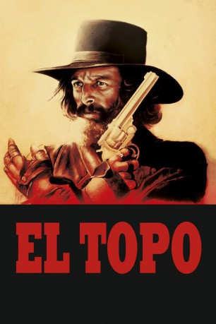

#4299 El Topo
 
 IMDB-Wertung: 7.5 / 10
IMDB-Wertung: 7.5 / 10  Tomatometer: 78
Tomatometer: 78  Metascore: 0
Metascore: 0 
Um sich mit vier übersinnlichen Mächten zu messen, reitet ein schwarz gewandeter Revolvermann names El Topo durch die Wüste. Zum Beweiß seiner titanischen Stellung muß er eine Reihe Aufgaben lösen, die ihn bis an den Rand des Wahnsinns treiben.
Jahr: 1970
Dauer: 124 Minuten
FSK: 18
Land: Mexiko Studio: Scotia International FilmverleihTonspuren:
Untertitel: Deutsch,
Auflösung: 1080p (1920x1080) Größe: 12390 MB
Genre: Drama, Western
Regisseur: Alejandro Jodorowsky
Drehbuch: Kacey Arnold
Soundtrack:
Darsteller:
- Alejandro Jodorowsky als El Topo
 Alfonso Arau als Bandido 1
Alfonso Arau als Bandido 1- Rueben Gonzáles als Prisonero 2
- Brontis Jodorowsky als Hijo
- José Legarreta als Moribundo
- José Luis Fernández als Bandido 2
- Alf Junco als Bandido 3
- Gerardo Zepeda als Bandido 4
- René Barrera als Bandido 5
- René Alís als Bandido 6
- Federico Gonzáles als Bandido 7
- Vicente Lara als Bandido 8
- Pablo Leder als Monje 1
- Giuliano Girini Sasseroli als Monje 2
- Cristian Merkel als Monje 3
- Aldo Grumelli als Monje 4
- Mara Lorenzio als La mujer
- David Silva als Coronel
- Ignacio Martínez España als Manco
- Eliseo Gardea Saucedo als Cojo
- Héctor Martínez als Maestro 1
- Paula Romo als Desconocida
- Bertha Lomelí als Gitana
- Juan José Gurrola als Maestro 2
- Víctor Fosado als Maestro 3
- Agustín Isunza als Maestro 4
- Jacqueline Luis als Mujercita
- Carlos Lavenant als Verdugo 1
- Eliseo Pereda als Verdugo 2
- Pablo Marichal als Esclavo
- Beatriz Beltrán Lobo als Señora 1
- Carmen Lamadrid als Señora 2
- Pepita González als Señora 3
- Cecilia Leger als Señora 4
- Elvira Agosti als Señora 5
- Antonio Álvarez als Prisonero 1
- Víctor Manuel Osorio als Prisonero 3
- José Pérez Bustos als Prisonero 4
- Eduardo Danel als Prisonero 5
- Álvaro García als Prisonero 6
- José Antonio Alcaraz als Sheriff
- Felipe Díaz Garza als Ayudante
- Patricio Pereda als Niño
- Marcos E. Contreras als Boxeador 1
- Arturo Silva als Boxeador 2
- Robert John als Hijo del Topo
- Julián de Meriche als Cura
- Valerie Tremblay als Mujer iglesia
- José Luis González de León als Hombre iglesia
- Francisco González Salazar als Tendero
Datei: X:\FSK18-Western\El Topo (1970, FSK18, 1920x1080).mkv seit 04.09.2016
Festplatte: FSK18
 Es gibt insgesamt 25 Filme in der Gruppe 'FSK18-Western'
Es gibt insgesamt 25 Filme in der Gruppe 'FSK18-Western'